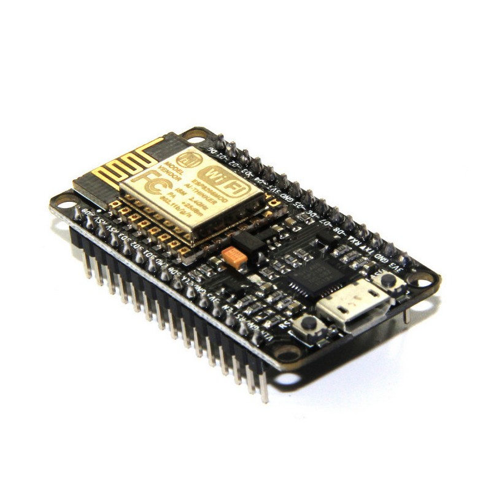

ESP32 (8266)
O que é "ESP32 (8266)"?
Os ESP32 e ESP8266 são microcontroladores com Wi-Fi integrado de baixo custo fabricados pela empresa Espressif Systems.
Eles funcionam como o cérebro programável para automação, robótica, sensores, e IoT.
Ele se relaciona com o arduino pela compatibilidade de ecossistemas. Embora sejam chips completamente diferentes, ambos podem ser programados com a mesma linguagem e mesmo software.
Junto do arduino, o ESP pode enviar dados pra nuvem, conectar o arduino na internet ou abrir uma página na web. Enquanto isso, o arduino cuida do mundo físico, como, por exemplo, controlando motores de passo, ler sensores industriais e responder instantaneamente a botôes.
A diferença principal do ESP8266 do ESP32 são suas capacidades computacionais, com o ESP32 sendo mais poderoso que o outro.
O ESP8266 custa por volta de R$ 10,00 até R$30,00, enquanto o ESP32 custa de R$ 30,00 pra cima.

LED que acende apertando botão com ESP32
Protótipo utilizando um botão físico no protoboard com microcontrolador ESP.